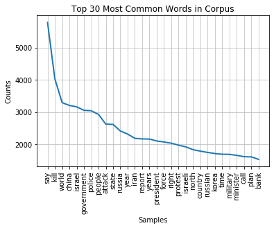
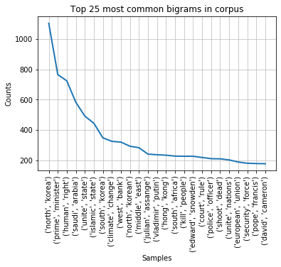
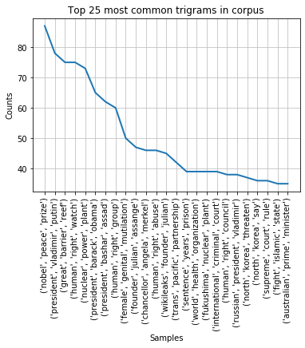
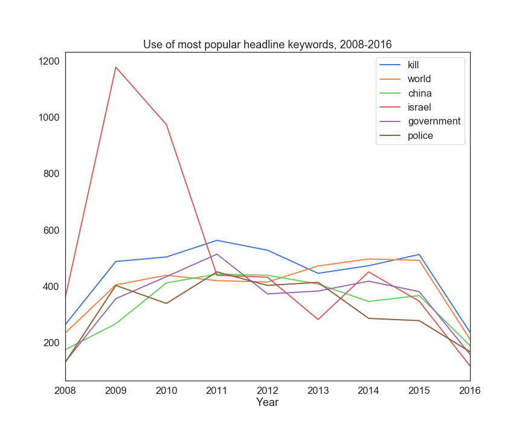

The Dow Jones Industrial Average data in our dataset ranges from late 2008 to mid 2016. From 2009-2015, complete weekday DJIA closing price data was collected for all years except 2012.
News API data...
Credits:
Headline data was captured from the Reddit r/worldnews forum over the same time period as the stock data, 2008 - 2016. These data were collected by J. Sun and included in the "Daily News for Stock Market Prediction" dataset described above. The average headline was 10.1 words long.
More interesting is a content analysis of the headlines. Based on a simple count of how often words and phrases appear in news headlines for our entire dataset, what can we learn?
Keyword analysis revealed some high-level trends having to do with particular countries ('China', 'Korea') and concepts ('government', 'police', 'kill'). Overall, these keywords were not particularly enlightening.
  In extending the analysis to bigrams (two co-occuring words) and trigrams (three co-occuring words), we see more specific topics begin to appear ('Julian Assange', 'Hong Kong', 'Islamic State', 'Trans Pacific Partnership', 'Chancellor Angela Merkel').
Of the top 10 single-word headlines, use of the terms appeared consistent over time, with the exception of "Israel", which peaked in 2009, likely due to that year's controversial Israeli military operation, "Operation Cast Lead".
In comparing the most popular headline keywords from when the DJIA was above/below average, we found no notable trends that could not be explained by the fact that the DJIA was generally on an upward trajectory from 2009 onward. Thus, popular keywords were simply related to the point in time at which they occurred, and did not appear to have an affect on the DJIA overall.
Latent Dirichlet allocation is a way to discover higher-level topics out of individual words present in any set of document (in our case, news headlines). You can use LDA to get a sense of the overall themes in a set of documents.
LDA is an unsupervised machine learning model that works by analyzing two things: a distribution of topics in a document, and a distribution of words in a topic. The "topics" it finds aren't specific words (e.g., "This headline is about 'war'") but instead conceptually similar groups of words that together make up a theme (e.g., "This headline is similar to the words 'war', 'crisis', 'iran'...").
Once you've created your LDA model, you can feed in a document and the model will score the overall relevancy of your document against the main x topics found in your overall corpus. In other words, it will tell you which of the main topics found in the overall corpus are also found in your document, and to what extent.
LDA is a popular topic modeling choice among NLP professionals. However, we found that it did not create topics as accurate and coherent as NMF, possibly due to the fact that we were working with short text.
Example LDA topic groupings:
Topic: 0 || president time force north protest
Topic: 1 || russian russia force president military
Topic: 2 || russia japan korea president country
Non-negative Matrix Factorization is a mathematical technique that when applied to documents can take data with many features (e.g. 1000s of topics) and convert them into a smaller set of topics. It is similar to LDA in that it is a way to discover higher-level topics out of individual words present in any set of document (in our case, news headlines). You can use NMF to get a sense of the overall themes in a set of documents.
NMF is an unsupervised machine learning model that works by taking your matrix A of documents x words (e.g. 50 documents and 5000 words) and returning topics (W) and weights/coefficients (H) for the topics.
As Rob Salgado explains in his excellent article on NMF, "NMF will modify the initial values of W and H so that the product approaches A until either the approximation error converges or the max iterations are reached."
Like LDA, the "topics" that NMF finds aren't specific words but instead conceptually similar groups of words that together make up a theme.
In our analysis, we found that NMF created more intuitive and coherent topic groupings.
Example NMF topic groupings:
Topic: 0 || police iran kill people afghanistan
Topic: 1 || gaza israel israeli hamas palestinians
Topic: 2 || isis islamic state islamic ebola state
Team Ifrit proudly presents our final project for our Data Visualization and Analytics Bootcamp, Cohort 6. Over the last 6 months we have learned a lot and now take several elements of the knowledge that we have gained to put together in this presentation.
We began with the challenge of building a model that could potentially predict the rise and fall of the stock market based on news headlines. For example, would stock prices rise with more positive news? Are there certain key phrases or words impact the direction of market values? Are certain analytical libraries better to use when finding these relationships? Our analysis found that the stock market is as unpredictable as one might think.
Though we were sadly unable to change the course of human history and also make ourselves filthy rich through this project, we are happy to have successfully utilized our data analysis skills to navigate through a tough question as a team, and deliver valuable conclusions based on the models that we built.

Data Analyst, Topic Modeling
Stacy Konkiel is a data analyst who delights in helping organizations with their intractable data related challenges. For this project, Stacy researched, applied, and refined natural language processing models that determined news headline topics. The resulting data were analyzed in regression models and neural networks to determine if daily news headlines drive stock market gains and losses.
Data Analyst
Can write about what you worked on here.

Data Analyst
Can write about what you worked on here.
Data Analyst
Can write about what you worked on here.
ETL Enthusiast
My contribution to this project was ETL centered around news headlines and NASDAQ Composite index data ranging from April 20, 2020 - May 15, 2020. Using Python, News API, Quandl, and some Excel, I created a dataset similar to the Kaggle dataset our models were created from that contains recent data my team could further test our models on.
I really enjoyed the synergy of technology used in this ETL process. If I were to go further with this project, I would try to obtain funding in order to access a larger volume of historical data from News API, alongside having unrestricted access to Quandl.
Data Analyst
Can write about what you worked on here.
We Design/Data Analyst
For this project I chose to focus more on the web design to make the presentation as professional looking as possible. Using what our group learned in class, I was able to help code the final presentation. Had I been able to have more time, I would have liked to explore more of CSS when designing the website and utilizing more aspects of JavaScript for more interaction for the user.